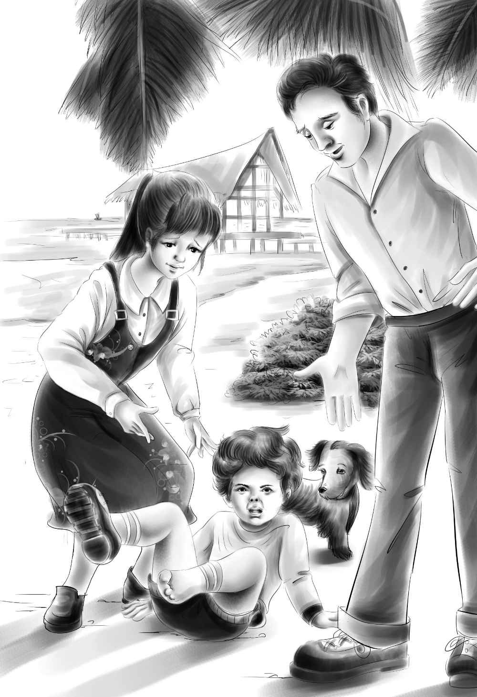

It was late summer and the children were sitting with Joe on the beach．
“We have to go home tonight，”said Jessie sadly．
“Grandfather says he wants to take us on a trip before school begins，”said Henry．
“I don’t mind going home，”said Violet．“I miss Grandfather，and he must have been lonesome，even if he didn’t say so．”
“I hope we can come again next summer，”said Henry．“We have had such a good time．”
“I’m glad we can sit down and talk quietly，”said Joe，“because I want to tell you something．I hope you won’t feel too bad about it．”
“What is it？”asked Henry quickly．
“It’s about the cave and the shell-pile，”said Joe．
“Oh，yes，”said Jessie．“Tell us the whole story，Joe．
“I know you would like to dig in that cave now．You found it，and you found the Indian things in it．But somebody ought to dig there who understands it．”
“Meaning yourself？”asked Henry．
“No，not alone，”replied Joe．“Your grandfather，my Uncle James，is letting a lot of men come to work at the cave．They are coming over with all their tools to dig very carefully so that they won’t miss anything．”
“That’s all right，”said Benny．“Couldn’t we watch them？”
“Sometimes you could，”said Joe．“Sometimes you couldn’t．You see they are going to blow the top off the cave．”
He watched the children as he said this．
“Oh，boy！”cried Benny．“That’s the day I’d like to come．”
“You would！”said Joe．“That’s just the day you can’t come．”
Benny suddenly began yelling at the top of his voice，“I want to come the day they blow the top off the cave！”
And then he began to howl．Throwing himself down on the sand，he howled and yelled just as loudly as he could．
“My！”cried Joe，who had not heard Benny howl before．“Can’t you stop him？ Does he do that often？”
“No，not often，”shouted Jessie over the noise．
“Listen，Benny，”said Violet．“Stop crying and I’ll build you a sand house．”
But Benny still howled．
“Look here，Benny！”said Henry finally．“What will Joe think？”
In spite of anything they could say，Benny yelled on and on．
“I’m sorry，”Henry said to Joe at last．“He will stop some time．Some day he’ll grow up．”
Just then a voice said very softly，“Please——”It was Captain Daniel．
“I came over，”he began，but stopped because of the noise．
Benny opened one eye．
Captain Daniel went on a little louder，“I came over to see if you’d like to go with me when I get my lobsters．”

At this，Benny opened the other eye and stopped howling．“I would，”he said．
“Whew！”said Joe．“What a noise that was！”
“It was for sure，”said Captain Daniel．“I heard it down in my boat．”
“He hasn’t howled all summer until today，”said Henry．“He’s getting over it．”
“I hope so，”said Joe．
“We’d like to go with you very much，Captain Daniel，”said Jessie．
“Any time，”said the captain．
“Let’s go right now，”said Benny，just as if he had never cried at all．
“All right，Captain，we’re ready to go，”said Henry．
Then everyone jumped up and climbed over the rocks with Captain Daniel to the motorboat．
As they scrambled into the boat，Benny asked，“Is it fun to get lobsters，Captain Daniel？”
“I enjoy it，”answered the captain．“Your grandfather enjoys it，too．I promised him to take you out once before you went home．”
There was a pail of fish-heads for bait in the bottom of the boat and a big empty box．Captain Daniel told them all where to sit．
“Sorry，”said Captain Daniel，looking at Watch，“I don’t think we’d better take the dog along．Can’t you leave him？”
“I am not going either，”said Joe．“I have to telephone a lot of people．Don’t you think Watch would stay with me？”
“He will if Jessie tells him，”said Henry．
“Listen，Watch，”said Jessie．“Sit down here．Stay．with Joe．”
Watch obeyed and sat down．
“Good dog，”said Jessie．“He understands．”
Soon Captain Daniel started the motor，and the children waved good-by to Joe．
“How nice this is！”cried Jessie．She put her fingers in the water．
“I wish you had asked us to go with you before，”said Henry．“It’s wonderful！”
“Why is that red board floating out there？”asked Benny，pointing．
“Good boy！”cried Captain Daniel，very pleased．“That’s one of my lobster floats．It shows the place where I have a lobster pot in the water．Good sharp eyes you have，Benny，to notice that．”
As they came near the red board，Captain Daniel stopped the motor．
“Can you reach it，Henry？”he asked，as the boat stopped．
Henry caught the red float and began to lift it out of the water．A lot of rope came up，and at last a heavy lobster pot．
“Oh，you caught some lobsters！”shouted Benny．“Aren’t they queer？ These are different from real lobsters——they’re green．”
“All lobsters are green，Benny，”said Jessie．“They turn red when they are cooked．”
“Will these turn red，too？”asked Benny，looking at the claws．
“Sure，”said Captain Daniel．He opened the lobster pot and took out three lobsters．He threw one back into the ocean．“Too small，”said Captain Daniel．“We’ll let it grow some more．”The other two he put into the box．
“Don’t pick them up，Benny，”warned Henry．“You’ve got to look out for those big claws．”
Captain Daniel baited the lobster pot with old fish-heads，shut it，and let it down again into the water．Then he started the motor，and away they went．
“The one who sees the next float first gets all the lobsters in it，”said Captain Daniel．
“What color is it？”asked Benny．
“Oh，that would be telling．Each one is a different color，”answered the captain．
All the children stared hard at the water．They could see nothing but waves．
“Ho，isn’t that another float？”said Henry suddenly，as they went past a blue board．
“Yes，that’s one，”said the captain．“I hope there will be lobsters in it．”
Henry caught the blue float．“Pull hard，”said the captain．“It’s deep here and there will be more rope．Want any help？”
“No，”said Henry．It was hard work．The rope seemed to go straight to the bottom of the ocean．At last the lobster pot came in sight．
“Empty！”cried Jessie．“Too bad！”
“Yes，”said Captain Daniel，taking in the lobster pot．“It often happens．This is the best one some days．Do you notice that the bait is gone？”
He baited the pot again and let it down．
“The next one will be yours，also，Henry．Hope for better luck，”said the captain．
Soon Benny said，“This float is white．Or maybe it’s a wave．”
“No，it’s a float，”said Captain Daniel，laughing．“Henry will have to give you a lobster for finding this float．”
Everyone watched as Henry pulled in the lobster pot．At last it came to the top．
“Oh，there are a lot！”cried Henry．“It’s a pile of claws．There must be four lobsters．No，five！”
“Six！”said Jessie，as Captain Daniel dropped them one by one into the box．“Isn’t that enough for our dinner？ Six lobsters？ You and Joe will have to come to dinner，too，to help us eat them．”
“Yes，thank you，and I’ll boil them for you，”said Captain Daniel．“I have a big wide kettle．When you take the meat out of the shells it is ready to eat．”
“But I don’t know how to take the meat out，”said Jessie．
“Joe will show you，”said the captain．
“Let’s do it outdoors，”said Jessie．
After they had pulled in a few more lobster pots，Captain Daniel headed the boat back to the island．
“You caught fifteen lobsters，”said Benny．“That’s a lot！”
“Not very many，”said the captain when they had reached the island again．“Some days I get two or three dozen．And six of these lobsters are yours．”
When the lobsters had been cooked，Joe sat down on the sand with his young cousins to take out the lobster meat．Jessie and Henry worked，but Violet and Benny just watched．
While they were working，Benny said，“Please let me come when they blow the top off the cave．”
Joe looked a little worried．He remembered what had happened before when he said “No．”And so he said，“Benny，I’m sorry，but only the ones who will do the work can come．”
“Will you be here？”asked Violet．
“Yes，Violet．I have to come．You see this is my work．All the things will go in a museum bigger than Uncle James’ museum．You found some wonderful things．”
“Oh，Joe，I’d like to have this for my work，too！”said Henry．“Would you teach me？”
“Yes，Henry，I’d like to．You never can tell what will happen．We might work together．”
“Will you tell us everything the men find？”asked Jessie．
“Oh，my，yes！”replied Joe．“You can see every single thing after they have dug it out．I’m glad you don’t feel too bad about not doing the digging．”
“We understand，”said Henry．“It will be better this way．”
“Now the lobster meat is all out，”said Jessie．“How shall we fix it，Joe？”
“Some people like it cold，”began Joe．
“Oh，but I want to cook just once more on the stove，”cried Jessie．
Joe smiled．“Then have a stew．Put the lobster meat in milk with butter and salt，and eat it hot．”
“That sounds good，”said Jessie．
The stew was delicious．When they were eating，Henry said，“I have an idea．Let’s come back here weekends until it gets too cold to come．”
“Wonderful，”said Jessie．“Now we won’t have much packing to do．We’ve eaten all the food．”
Violet put the dishes in the cupboard while Jessie put the towels and blankets in boxes to be taken home and washed．Henry stood the rest of the boxes along the wall and shut all the windows．They left the museum just as it was．
Benny carried Violet’s paints，pen，and her workbag．She carried the violin herself．
“Good-by，barn！”said Benny，when Henry shut the door．“I am not going to cry．”
“Good for you，Benny！”said Henry．“Just keep thinking how lonesome Grandfather has been．”
“I want to go home now，”said Benny．“I want to sleep in my real bed．”
Henry laughed．A real bed seemed very good to him，too．
Captain Daniel took the children over to the mainland．When they saw their grandfather waiting for them in the car，they ran to him and all began to talk at once．
“Get in，get in！”said Mr．Alden．“I want to hear all about it，but I can’t understand four people all talking at the same time．”
But the children could hardly wait to take turns．They told him about the floats and the lobsters and the cave．
“They are going to blow the top off the cave，Grandfather！” cried Benny．
“Really？”said Mr．Alden，who of course knew all about it．“What a noise that will make！”
“Joe won’t be home for good until later，”said Jessie．“He said to tell you that he would stay with Captain Daniel．He won’t move into the little yellow house．”
“I should say he won’t！”cried Mr．Alden．
For a minute，the children were too surprised to say anything．
Then Henry said，“Grandfather，that’s one thing we can’t understand．Why didn’t we ever get to go into that little yellow house？ Doesn’t it belong to you？”
Mr．Alden looked at his grandchildren．Then he said quietly，“That’s another story．”
“We won’t ask about it now，”said Jessie quickly．“You have been so wonderful to us．Thank you for our summer on the island．”
“That’s all right，”said Mr．Alden，smiling again．“I’m glad to have you all at home．I believe I shall even be glad to hear Watch bark at the milkman tomorrow morning．”
That night，when Jessie was going to bed in her own room，she thought she heard Benny calling．
“Did you call me，Benny？”she asked，going into her little brother’s room．
“Yes，”said Benny very slowly，for he was almost asleep．“I said Joe is going to live with us，and he’s my best friend in all the world．”
“Yes，I know he is，”said Jessie，pulling up the blanket．
“I mean all but you，Jessie，of course，and Violet，and Grandfather——”
“And Watch？”asked Jessie．
“Yes，of course Watch，and Henry——”
He stopped．
“And Captain Daniel——”
Jessie saw that Benny’s eyes were shut．He had gone to sleep naming his friends．But it did not matter，thought Jessie，smiling．For it would have taken a long time to name all of Benny’s friends．
And downstairs，the children’s real best friend settled back in his big chair to make plans for them．